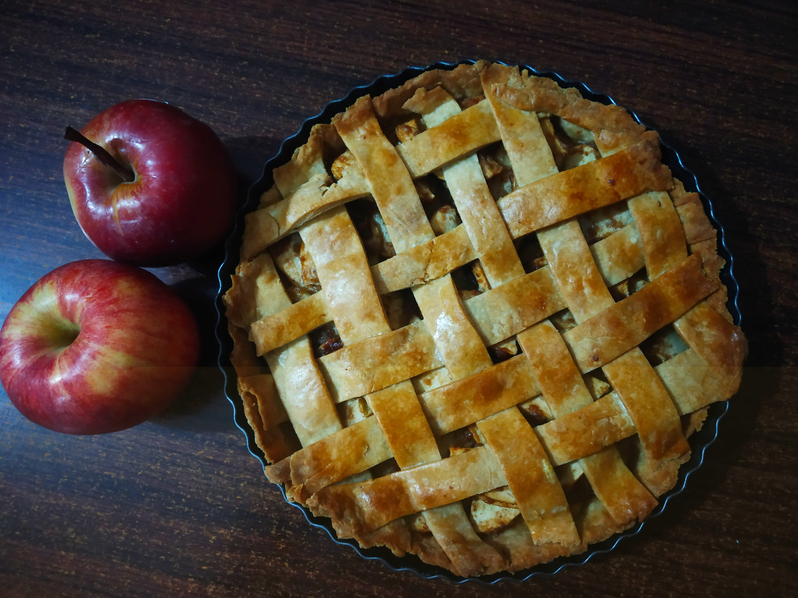

Salted Caramel Apple Pie

A sweet and salty dessert
A classic apple pie with a sweet and salty twist.
Ingredients
Pie Crust
- 2 1/3 cups all-purpose flour
- 2 1/4 tsp kosher salt
- 1 1/2 cups cold unsalted butter, cut into 1/2-inch cubes
- 1/2 cup ice cold water, divided
Caramel Sauce
- 1 cup white sugar
- 6 tbsp salted butter, cut into 1/2-inch cubes, at room temperature
- 1/2 cup heavy whipping cream
- 1 1/2 tsp fine sea salt
Filling
- 10 medium Granny Smith apples - peeled, cored, sliced
- 1/2 cup white sugar
- 1/4 cup all-purpose flour
- 2 tbsp fresh lemon juice
- 1 tbsp cornstarch
- 1 1/2 tsp ground cinnamon
- 1/4 tsp kosher salt
- 1/4 tsp ground cloves
- 1/4 tsp ground nutmeg
- 1 large egg, beaten
- 1 tbsp turbinado sugar
Steps
- Make the pie crust: Whisk flour and salt together in a large bowl.
- Add butter and toss until pieces are completely separated and coated with flour mixture.
- Using youro hands, work butter into the flour mixture until well combined and butter pieces are no larger than a pea.
- Gently stire in 1/4 cup cold water with a spatula until completely absorbed.
- Add remaining 1/4 cup water, 1 tbsp at a time, gently stirring between each addition until dough begins to form into a ball. Depending on how humid it is in your kitchen or how hydrated your flour is, you might not need to use all of the water.
- Transfer dough to a clean work surgace and gently knead, being careful not to overwork it, until smooth and slightly tacky.
- Divide dough evenly into 2 pieces. Form each piece into a flat disk and wrap individually in plastic wrap. Chill for at least one hour or up to three days in the refrigerator.
- While dough is chilling, make the caramel sauce: heat sugar in a small saucepan over medium heat, stirring occasionally until completely melted and amber in color, 10-15 minutes.
- Add butter to melted sugar and cook, stirring constantly, until butter is melted and completely combined, about 1 minute.
- Carefully add heavy cream to sugar mixture, stirring constantly, until bubbly, 15-30 seconds. Remove saucepan from heat and stir in sea salt. Set caramel sauce aside to cool slightly at room temperature until ready to use
- Make the filling: stir apples, sugar, flour, lemon juice, cornstarch, cinnamon, salt, cloves, and nutmeg together in a large bowl until well combined. Set apple mixture aside at room temperature, uncovered, for 30 minutes.
- Pour apple mixture through a strainer into a large bowl. Set apple mixture aside, and transfer the strained liquid to a small saucepan.
- Bring liquid to a boil over medium heat, stirring occassionally, until thickened. Remove saucepan from the heat and set aside at room temperature.
- Working with one dough disk at a time on a surface lightly dusted with flour, roll each dish into a 1/8-inch thick circle that measures 12 inches in diameter. Place one dough circle in a 9-inch pie pan and gently press dough into the corners and sides of the pain.
- Stir together apples and reduced apple liquid in a large bowl; arrange apple mixture in the pie crust and drizzle with 1/2 cup of the caramel sauce.
- Place remaining dough circle over top and press into apple mixture and into edges of pan. Using fingers, fodl the edges under and crimp to seal.
- Brush the top and edges of dough with beaten egg and sprinkle with turbinado sugar.
- Cut eight 1-inch slits in the dough with a sharp paring knife to allow steam to escape. Place pie on a rimmed sheet pan.
- Bake pie in the preheated oven until the top is light golden in colour, about 20 minutes. Without removing the pie, recude the oven temperature to 375 degrees F and continue baking until dough is deep golden brown and filling is starting to bubble, about 25 minutes.
- Gently cover pie with aluminum foil and continue baking until a knife inserted in the center comes out mostly clean, about 25 minutes.
- Remove pie from the oven and transfer to a wire rack to cool completely, about 2 hours. Serve pie with remaining caramel sauce if desired.